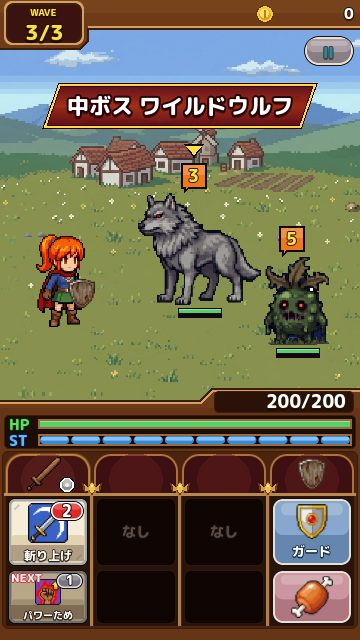

フレンドとレンタル武器
フレンド ID での申請と承認、自慢の武器の選び方、レンタル武器リストの並び方と借りた武器の決まりを、画面の流れにそって解説します。 更新：2026-11-23
フレンドとレンタルが使えるようになるまで
キシドラ！には、ほかのプレイヤーとフレンドになり、おたがいの「自慢の武器」を戦いに借りていける機能があります。地図の下の欄のフレンドのボタンは、ゲームを始めたばかりのアーケディア城にいる間は灰色で、平原の村に初めて着いたときに光って「NEW!!」の印が出ます。武器のレンタルも、アーケディア城をクリアしたあと、平原の村の STAGE から使えるようになります。

フレンドの機能は、ゲームのサーバーと通信して動きます。通信できない場所で開くと、「フレンドIDを作っているところ」のような表示が出ます。電波のよいところでマップを開き直すと、あなた専用のフレンド ID が決まります。
フレンドになる手順
フレンド ID は 9 けたの数字で、画面では「123 456 789」のように 3 けたずつ区切って表示されます。メニューの「プロフィール」で自分の ID を確かめられるので、フレンドになりたい相手と教えあいましょう。
- プロフィールの「フレンド」の札を開き、「IDで探す」を押す
- 相手のフレンド ID を入れる（空白や「-」は入れても飛ばされます）
- 見つかった相手に「申請する」を押す。「申請した。相手が承認するとフレンドになる」と出ます
- 相手の画面には「届いた申請」が出るので、相手が「承認」を押すとフレンドになります
フレンドは 50 人まで登録できます。自分の ID を入れると「それはあなたのフレンドID」と教えてくれます。フレンドの一覧からフレンドを選ぶと、その人の名前・進み具合・今の装備・自慢の武器・強敵の討伐記録・蜃気楼の記録などを見られます。どんな装備で同じボスを倒したのかを見るのは、自分の装備を考えるよいヒントになります。
自慢の武器（相棒の武器）を選ぶ
ほかのプレイヤーがあなたから借りられるのは、プロフィールで選んだ「自慢の武器」1 本です。画面によっては「相棒の武器」とも書かれています。持ち物の武器から選べて、盾は選べません。選んだ武器を売ると、自慢の武器からも外れます。
自分で選んでいないときは、持っている中からレア度の高い武器がおまかせで選ばれます。ただし、フレンドでない人の画面に「ゲスト」として出るのは、港町ポトスをクリアしていて、自慢の武器を自分で選んでいるプレイヤーだけです。ほかの人に使ってもらいたいなら、ぜひ自分で 1 本選んでおきましょう。
自慢の武器には、スキルの順番だけで必殺技が出せる 1 本を選ぶのがおすすめです。借りた人は、その武器のスキルをつなげて必殺技を出せるので、とても喜ばれます。強化の星もそのまま相手に見えます。

レンタルの流れ
STAGE を選んで「決定」を押すと、出発の準備の前に「レンタル武器リスト」が開きます。1 行ごとに、貸してくれる人の名前とひとこと（本物のプレイヤーは最終プレイの日時）、武器の絵・名前と強化の「+N」・攻撃力・スキル、そして「その武器を借りると増える必殺技」が並びます。
並び方は次のとおりです。
- フレンド：自慢の武器を選んでいるフレンド。最近遊んだ人から
- ゲスト：フレンドではないけれど、最近遊んでいるほかのプレイヤー
- 旅の仲間：ゲームの中にはじめからいる仲間たち（このページでは「旅の仲間」と呼びます）。後のエリアの仲間ほど強い武器を持っていて、新しいエリアが開くたびに増えていきます
本物のプレイヤーの行に出る「最終プレイ」は、その人が最後に遊んだ時間で、「たった今」「3時間前」「2日前」のように表示されます。最近遊んでいる人ほどフレンドの一覧の上に来るので、よく遊ぶフレンドの武器ほど借りやすい並びになっています。
借りたい武器を選んで「決定」を押すと、出発の準備の画面に進みます。借りないときは、リストのいちばん下の「武器をレンタルせずに出発」を選びます。前に借りた相手は、次の STAGE でもはじめから選ばれているので、同じ武器で続けて遊ぶときも手間がかかりません。
出発の準備の画面では、メイン・サブ・レンタル・盾の 4 つの列と、今の装備で出せる必殺技が並びます。借りた武器のスキルでつながる必殺技は、黄色の「＋」付きで表示されます。
どの武器を借りるか迷ったら、まず STAGE の「詳細」でボスの弱点を見てください。メインとサブで足りない種類の武器を借りるのがいちばん効きます。たとえばメインが剣・サブが槍で、ボスの弱点が槌なら、槌を借りれば弱点をつける武器が 3 本目として加わります。出発の準備の「おすすめ」ボタンは自分の持ち物からメイン・サブ・盾を選ぶもので、借りる武器までは選ばないので、レンタルは自分で決めましょう。

借りた武器の決まり
- 使えるのはその STAGE だけ：クリアしても負けても、武器は相手に返ります。自分の持ち物にはなりません
- 特殊効果は働かない：武器の特殊効果はメインの武器だけです。借りた武器はスキルと攻撃力で戦います（剣・槍・槌の使い分け）
- 必殺技は出せる：借りた武器のスキルの順番でも、メインやサブとつないでも、必殺技になります
- ゲストの武器はゲームの段階でしぼられる：序盤から強すぎる武器を借りられないように、ゲストの武器は挑む STAGE の段階で、超序盤は R まで、序盤は R+ まで、中盤は SR まで、終盤はしぼりなし、と決まっています。フレンドと旅の仲間の武器はしぼられません
- 装備のレア度に上限がある場所では、借りる武器も上限まで：蜃気楼のダンジョンなど、持って行ける装備のレア度が決まっている場所では、リストにもその上限までの武器しか出ません
- まだ行けない世界の武器は出ない：地底・海底などの武器は、自分がその世界に行けるようになってから候補に出ます
ゲストの武器を借りて STAGE をクリアすると、「○○にフレンド申請する？」と聞かれます。助けてもらった相手に、そのまま申請を送れるしくみです。
旅の仲間の武器で必殺技を覚える
旅の仲間のひとことは、その武器で出せる必殺技のヒントになっています。たとえば平原の村から出てくる 3 人は、あおぞらが「突きのあとにジャベリンでカンツウ！」、ねこまるが「斬り上げのあとにスラッシュだにゃ」、ガンテツが「アッパーからたたきでカブトワリ」と教えてくれます。どれも、その武器のスキルを順番にくり返すだけで必殺技が出る組み合わせです。
砂漠のオアシスのそらまめは「パワーためをはさんでアッパー2回」、漁師の里のゆずれもんは「メガヒットからギガヒットで大技」と、先に進むほど大きな技のヒントになっていきます。自分の手持ちにまだない必殺技を、借りた武器で試してみるのは、どのスキルを持つ武器を探せばよいかを知るいちばんの近道です。必殺技の一覧と順番は スキルと必殺技のつなぎ方 を見てください。
ガチャのお知らせと、マナー
フレンドがガチャで、その世界のいちばん上のレア度の武器を引き当てると、あなたのガチャの画面のいちばん下に、ネオンの広告のように右から左へ流れるお知らせが 24 時間出ます。フレンドの近況が分かるちょっとした楽しみです（ショップとガチャ）。
フレンドの機能では、あなたの名前・自慢の武器・進み具合などが、ほかのプレイヤーにも見えます。ほかの人がいやな気持ちになる名前はつけないでください。また、持ち物の中に本来ありえない武器や盾（剣に槍のスキルが付いた武器など）が見つかると、フレンドの申請・承認と、フレンド・ゲストの武器のレンタルが使えなくなり、ほかのプレイヤーにもあなたは表示されなくなります。
よくある質問
- 申請したのにフレンドにならない：相手が承認するまでは「申請中」のままです。相手がゲームを開いて承認するのを待ちましょう
- ゲストが出てこない：通信できていないか、その段階で借りられるレア度の武器を持つゲストがいないのかもしれません。旅の仲間はいつでも借りられます
- 借りた武器を強化したり、装備セットに入れたりできる？：できません。借りた武器は持ち物に入らないので、鍛冶屋にも装備セットにも出てきません。気に入った武器があったら、同じ名前の武器をガチャや宝箱で探してみましょう
- 自分の武器を貸すと減ってしまう？：減りません。貸しているのは武器の写しのようなもので、あなたの持ち物はそのままです